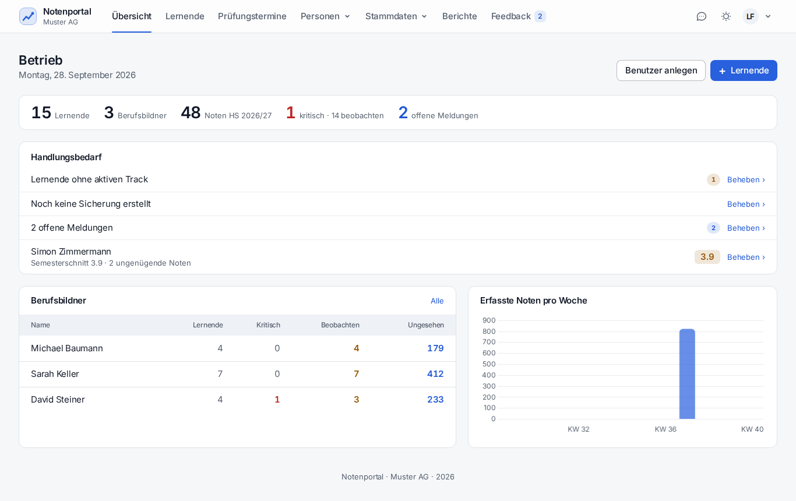
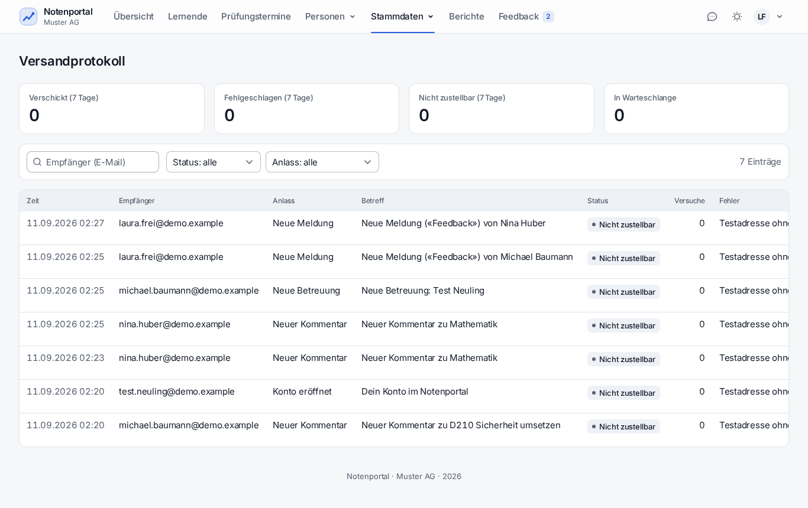

Zwei Ebenen: PRTG überwacht den Server von aussen, das Portal meldet seine eigenen Störungen selbst.
| Business-Service / Host | PRTG-Sensor | Bemerkung |
|---|---|---|
| srv-lab-dva-001 | Ping | Grundverfügbarkeit der VM |
| srv-lab-dva-001 | CPU / RAM / Disk Free | Warnung bei < 15 % freiem Platz – Sicherungen und Dokumente wachsen |
| Notenportal Web | HTTP http://172.26.14.101/login | Erwartet 200 und den Text «Anmelden». Der beste einzelne Sensor: er prüft Apache, PHP und Datenbank in einem Zug |
| Notenportal Web | HTTPS Zertifikat | Warnung 30 Tage vor Ablauf. Lab-Zertifikat läuft am 14.12.2028 ab |
| srv-lab-dva-001 | Dienst apache2 | SSH- oder SNMP-Sensor |
| srv-lab-dva-001 | Dienst mariadb | SSH- oder SNMP-Sensor |
| Notenportal Sicherung | Datei-Alter storage/app/private/sicherungen | Fehler, wenn die neuste Sicherung älter als 48 Stunden ist |
Das Admin-Dashboard sammelt unter «Handlungsbedarf», was nicht stimmt: fehlgeschlagene Jobs, fehlgeschlagene Mails der letzten sieben Tage, Kalenderabgleich-Fehler, fehlende Sicherung, Lernende ohne Track oder Betreuung, offene Meldungen.

php artisan notenportal:bereitschaft # lesbar
php artisan notenportal:bereitschaft --json # für ein Monitoring-SkriptRein lesend, ändert nichts. Exit-Code 1, sobald ein Punkt als Fehler gilt – damit taugt der Befehl direkt als PRTG-«Script v2»-Sensor über SSH.
| Geprüft wird |
|---|
Umgebung: APP_ENV, APP_DEBUG, APP_URL, Secure-Cookie |
| Mail-Umleitung noch aktiv? (im Betrieb muss sie leer sein) |
| Kopie ausser Haus eingerichtet und erreichbar |
| Alter der letzten Sicherung |
| Fehlgeschlagene Jobs und Mails |
| Fehler beim Kalenderabgleich |
| Offene Migrationen |
